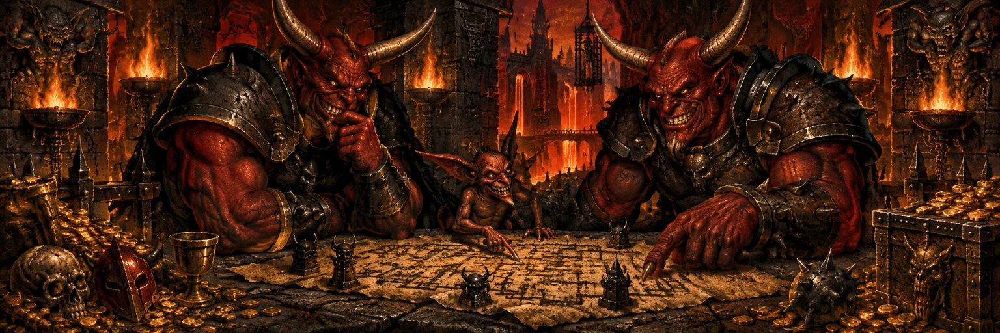

TWO HEADS. ONE VERY BAD IDEA.DUNGEON KEEPER 2. TOGETHER. AT LAST.
Evil loves company.
The main campaign is now fully playable in co-op.
Share a dungeon. Command the creatures. Take on the heroes.
Bring a friend and enjoy the madness together.
A partnership forged in the pits
You remember the dungeon. Now share the keys.
Remember when your mate had to sit beside you going “no, dig THERE”? Those days are over. They can now dig in entirely the wrong place themselves.
This is Shared Keeper co-op: two people with equal, simultaneous control of one Keeper faction. The same rooms, the same creatures, the same pile of gold. And twice as many terrible ideas.
The whole campaign
Play through the original main campaign together. Your old conquests, with an accomplice.
One shared dungeon
Build, command, and manage together. Both of you have a hand in the chaos.
Double the mischief
Divide the work. Share the glory. Blame your friend when it all goes horribly wrong.
The heroes have had it too easy for too long.
Summon your accomplice
Each person needs their own installed copy of Dungeon Keeper 2 v1.70 and the same co-op package.
Get the co-op package
Check the project's release archive for the co-op ZIP. Both of you need the same version. Yes, both. No, your friend can't “just join”.
Unpack your evil
Back up your game folder, then extract the ZIP into it and replace files when prompted. Not into Downloads. We've seen your Downloads folder.
Conquer together
Launch
DKII-DX.exeand choose Multiplayer → Co-op Campaign. One player hosts and picks a mission; the other joins. Both confirm readiness, then begin.
Open the dungeon gates
- Hosting online: Forward UDP port 7575 on your router to port 7575 at your PC's local IPv4 address. Reserve that address so the rule keeps working.
- Joining online: Add the host's public IPv4 address to the game's Address Book, with port 7575.
- Same local network: Use the host's local IPv4 address. No port forwarding needed.
Both players must allow DKII-DX.exe through Windows Firewall. Your friend is supposed to get into the dungeon. That's the entire point.
Use UDP for the forwarding rule, even though the menu says TCP/IP. Using GameRanger instead? Follow its setup guide.
Give the heroes a very bad day.
Dungeon Keeper 2 is not included. See the bundled README for setup notes and known limitations.
Questions from the torture chamber
Are we running separate dungeons?
No. One dungeon, one treasury, one army. Both of you give orders at the same time.
Can we play the original main campaign?
Yes. Play the main campaign together, with the host choosing each mission.
Who gets the gold?
You share one treasury. Then your friend builds a Casino. Then you share one financial crisis.
Can I play with my mum?
Only if she is evil. Check the box on the back of the manual.
What if my friend is a hero at heart?
The Torture Chamber accepts all applicants.
Whose campaign progress is saved?
Progress and unlocks are saved on the host's PC only. Your friend can join without unlocking those missions themselves. They get to take credit, just not the save.
Anything to know before we descend?
Use the same co-op version and matching game data and gameplay settings. Let cutscenes finish; even evil has to sit through the briefing. Custom resource packs and test settings stay as you set them. Making those work together is your department.
Where do we report something broken?
Use the bug tracker. Include your co-op version, mission, and what each player did. One bug per report. Blaming your friend is optional.
Sign the guestbook. Or else.
Entries are not sent or saved.
The Bile Demon eats the paperwork.
It's good to be bad. It's better with company.